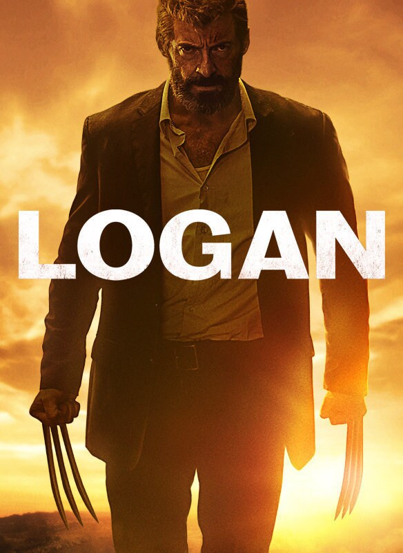
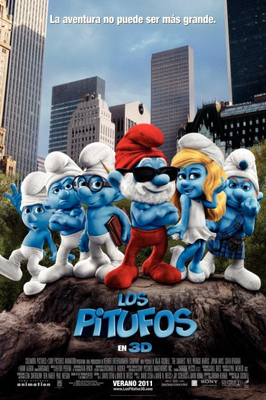
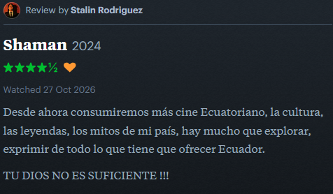
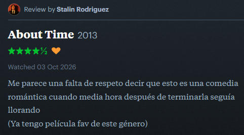
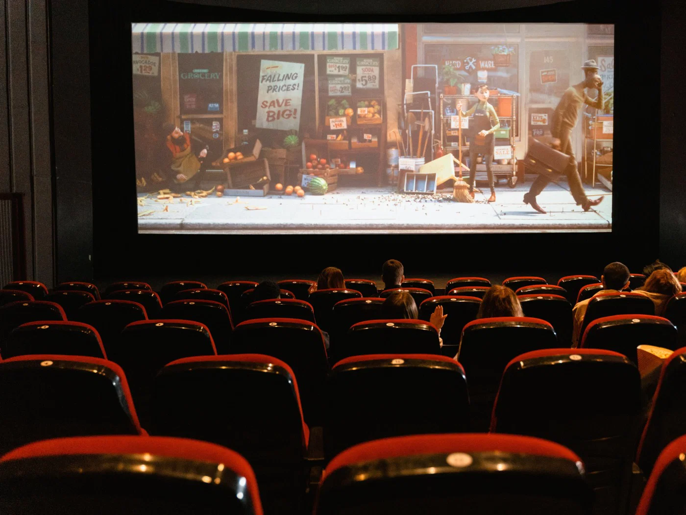

About Time
2013

Cada película es una nueva experiencia. Aquí comparto las historias que he visto, mis calificaciones, mis opiniones y aquellas películas que se han convertido en mis favoritas.
EXPLORAR MI DIARIOEl cine no termina cuando aparecen los créditos finales. Cada historia nos deja emociones, preguntas y reflexiones. En este espacio comparto mi experiencia como espectador, las películas que voy descubriendo y mis opiniones personales sobre ellas.
Me encanta descubrir nuevas películas, regresar a mis favoritas y compartir lo que cada historia me hace sentir. En mi perfil de Letterboxd encontrarás mi diario de películas, calificaciones, reseñas y listas personales.
VISITAR MI LETTERBOXDCuatro películas que ocupan un lugar especial en mi corazón.
2013

2017

2023
2010
Algunas de las películas que he visto recientemente.
Una historia que disfruté y que me dejó momentos para recordar.

Una película que recordaba mejor de niño.

Una experiencia que no quiero vovler a repetir.
Una historia que tiene mucho que ofrecer a sus espectadores.
Una mirada personal a las películas que he visto.

Una opinión personal sobre una película que me hizo reflexionar.
LEER EN LETTERBOXD →
Lo que una historia puede transmitir más allá de su argumento.
LEER EN LETTERBOXD →No todas las películas tienen que ser perfectas para convertirse en nuestras favoritas. Algunas nos acompañan en momentos importantes, otras nos ayudan a comprender nuestras emociones y muchas simplemente nos hacen felices. Por eso, detrás de cada calificación siempre existe una experiencia personal.

Visita mi perfil para conocer todas mis películas, reseñas, listas y calificaciones.
IR A LETTERBOXD